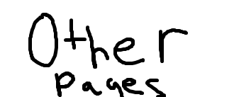
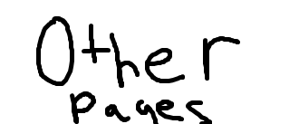

2023-01-24: It's been a while! Not much progress unfortunately. For whatever reason there's a huge bug in the audio code so it isn't working as of now. Telemetry ideas! We send a beacon as CW for most of the time. Once each cycle we send a 'quick' telemetry, indicating the status of most components. Around cycle 270 (or something like that) we switch to telemetry only occasionally, to accomodate the fact that the main focus of the mission now shifted to recovery. I don't know if we'll need it, but if we do it'll be there. s The telemetry format will be ASK, with no CRC or anything complex like that. Simply: Field 1: (0/1) computer stats Field 2: (0/1) neopixel enabled? Field 3: audio enabled? Field 4: (multiple bits) cycle number Stay tuned!